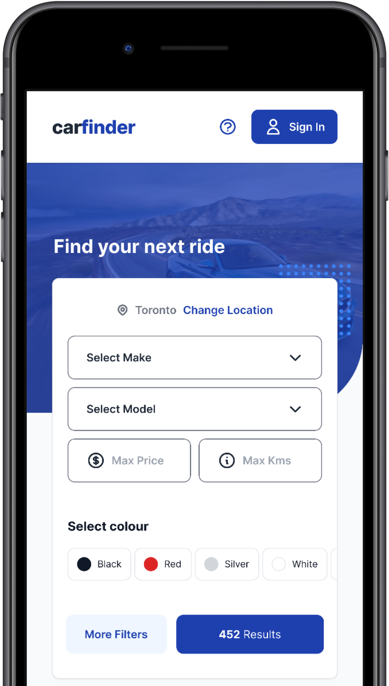
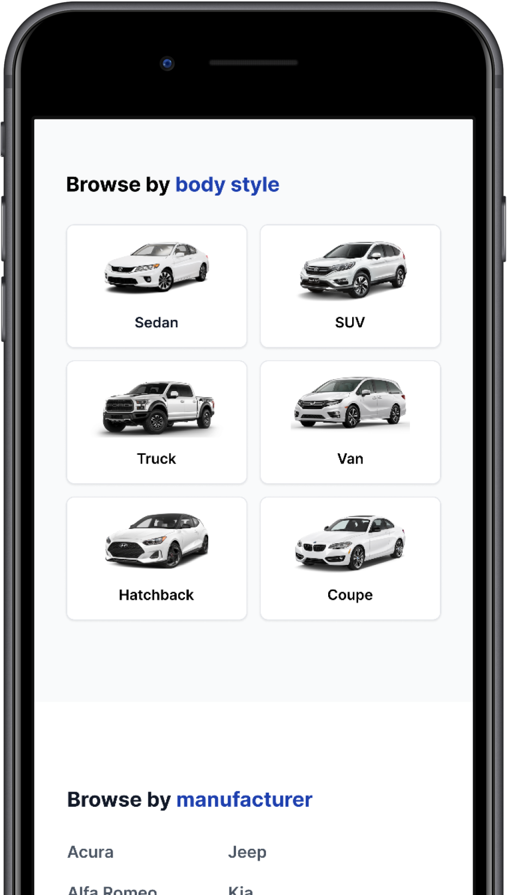
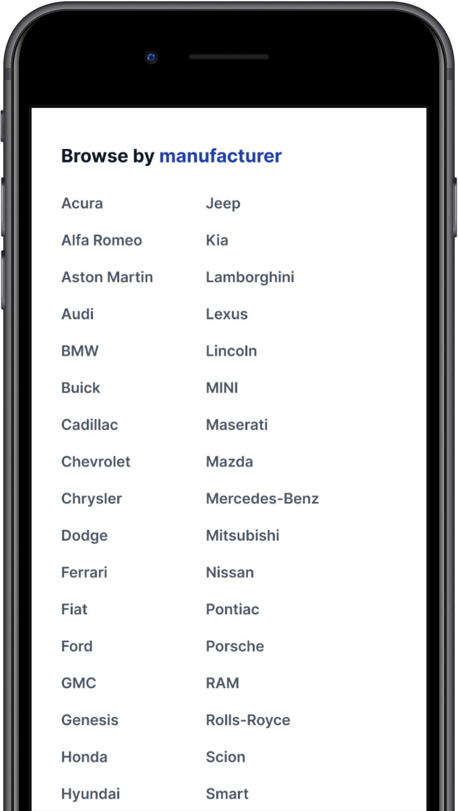

UI, UX, Web Design, Mobile Design
Carfinder: Used car finder
Project Overview
Finding your next vehicle shouldn't be a tedious task. For fun, I designed a used car finder similar to Autotrader or Kijiji Autos. I found that the current options for finding a used car can be confusing and overwhelming for the user to use.
After conducting user research to find out what people would like to see when finding a used vehicle I went to work creating wireframes and playing around with a few different designs until I landed on the final version displayed below.
User Research
After interviewing some users of Kijiji Autos, Autotrader and other used car websites, they wanted to see the following improvements:
- Quick search feature
- Less required filters
- Browse by colour option
- Ability to have multiple columns of vehicles instead of the usual one row
- Larger images
- Quick load time of listings & images
- Search button shows number of vehicles available as filters are selected
Screenshots


